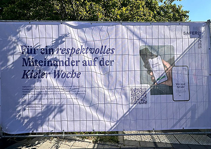

Stadien. Festivals. Städte. uvm.
Eingesetzt. Bewährt. Vertraut.
Von der Bundesliga bis zur UEFA EURO, vom Stadtfest bis zur Universität – saferspaces ist überall dort im Einsatz, wo echte Sicherheit zählt.
Offiziell Teil des UEFA-Safeguarding-Konzepts
Bei der UEFA EURO 2024 war saferspaces offiziell als Rapid-Response-Mechanismus in allen Spielorten im Einsatz – dokumentiert und verlinkt auf uefa.com als Teil des Human-Rights-Programms.
Zur UEFA-Dokumentation →„Spectators can also reach the dedicated team through this link: euro2024.saferspaces.io. The technical set-up is supported by SAFER, a Football Supporters Europe-led project funded by the European Commission."
Quelle: uefa.com →Alle Referenzen

UEFA EURO 2024 & 2025
Offizieller Rapid-Response-Mechanismus bei zwei aufeinanderfolgenden Europameisterschaften – in Deutschland und der Schweiz. Whitelabel-Integration in die UEFA-App, in vier Sprachen, in 18 Stadien und 4 Fanzonen im Einsatz.
Holstein Kiel
Saferspaces ist bei Holstein Kiel auf allen Ebenen verankert: im Stadion für Fans, in der Geschäftsstelle für Mitarbeitende und im Nachwuchsleistungszentrum für Jugendschutz und Child Protection.
FC St. Pauli, 1. FC Magdeburg & FC Bocholt
Niedrigschwellige Meldeoption im Stadion – DFB/DFL-konform. Von Anfang an erprobt mit Bundesliga-Partnern, darunter FC Bayern München.
.png)
Barclays Arena Hamburg
Permanente Awareness-Infrastruktur für eine der größten Multifunktionsarenen Deutschlands. Seit 2025 dauerhaft im Einsatz – über alle Veranstaltungen, Gewerke und Produktionen hinweg.

Kieler Woche
Seit 2023 jährlich beim größten Segel- und Sommerfestival Nordeuropas im Einsatz. Flächendeckende Meldewege für bis zu 3,8 Millionen Besucher:innen – mit Berichterstattung in den ARD Tagesthemen.
Care Aware
Stadt Krefeld
Seit 2023 baut die Gleichstellungsstelle Krefeld gemeinsam mit saferspaces ein stadtweites Awareness-Konzept auf – vom Rosenmontagszug bis zur Kulturfabrik. Initiative Care Aware, Schwerpunkt „Sicherheit im öffentlichen Raum".
Stadt Hannover
Saferspaces begleitet die Stadt Hannover bei einer Vielzahl von Stadtveranstaltungen – Maschseefest, Fête de la Musique, Schützenfest und CSD. Flächendeckende Meldewege für die gesamte Eventlandschaft.
Nordrhein-Westfalen
Landtag NRW Düsseldorf
Referenz vom Präsidenten des Landtags Nordrhein-Westfalen. Saferspaces als Awareness-Infrastruktur für parlamentarische Veranstaltungen und Öffentlichkeitsformate.
.png)
OMR Festival
QR-Codes auf Screens, Venue-Link omr.saferspaces.io und nahtlose Integration in die OMR-Infrastruktur. Schnell aufgesetzt, automatisch mehrsprachig, sofort einsatzbereit.
München
Tollwood München
Seit 2023 Teil des Awareness-Konzepts des Tollwood Festivals – Münchens größtem Kulturfestival mit klarem Werteprofil. Saferspaces passt zum Spirit: offen, divers, sicher für alle.

gamescom
Awareness-Infrastruktur für eine der größten Gaming-Messen der Welt. Barrierefreie Meldewege für internationales Publikum – automatisch in der Gerätesprache.
Festival
Reeperbahn Festival
Seit 2022 Teil des Awareness-Konzepts des Reeperbahn Festivals – Europas wichtigstem Club-Festival. Meldewege über das gesamte Festivalgelände im Hamburger Stadtteil St. Pauli.
Rune Sauna
Awareness-Infrastruktur für einen modernen Freizeitbetrieb. Saferspaces schafft niedrigschwellige Meldewege für Gäste – diskret, anonym, sofort erreichbar.

Universität Flensburg & Starterkitchen Kiel
Niedrigschwellige Meldewege auf dem Campus und in Gründerzentren. Compliance-Reporting für Hochschulleitungen, sichere Räume für Studierende, Mitarbeitende und Gründer:innen.
Kollektive
Clubs & Kollektive
Eine wachsende Zahl an Clubs, Kollektiven und Veranstaltungsformaten nutzt saferspaces als Awareness-Tool – von kleinen Kulturorten bis zu etablierten Spielstätten. Diskret, schnell eingerichtet, ohne App.
Wo wir als nächstes hinwollen
Viele Gespräche laufen bereits – hier sind die Branchen, in denen saferspaces großes Potenzial sieht. Werde Pionier:in in deiner Branche.
Über saferspaces berichtet
Was unsere Partner sagen
„Saferspaces verändert das Prinzip von Sicherheit – vom Gefühl der Bedrohung hin zum Gefühl, sich wohl und sicher zu fühlen."
„Allein die Sichtbarkeit der QR-Codes hat die Atmosphäre im Venue verändert. Besucher erkennen: hier wird Sicherheit ernst genommen."
folgt in Kürze
folgt in Kürze
Bereit für den nächsten Schritt?
In einer persönlichen Demo zeigen wir euch, wie saferspaces in eurem Kontext funktioniert – und welche Erkenntnisse ihr vom ersten Einsatz an gewinnt.
Demo buchen